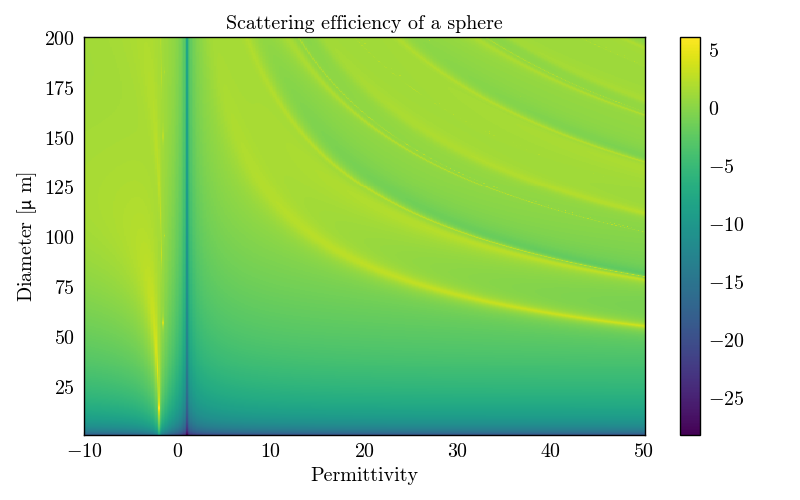

Note
Go to the end to download the full example code.
Scattering efficiency of a sphere#
PyMieSim makes it easy to create a source and a scatterer. With these objects defined, it is possible to use PyMieSim to find the scattering efficiency of the scatterer. This feature can be used to plot a graph of the scattering efficiency of a sphere as a function of the permittivity and the size parameter.

import numpy
from PyMieSim.units import ureg
import matplotlib.pyplot as plt
from PyMieSim.experiment.scatterer_set import SphereSet
from PyMieSim.experiment.source_set import GaussianSet
from PyMieSim.experiment.polarization_set import PolarizationSet
from PyMieSim.experiment import Setup
polarization_state = PolarizationSet(
angles=90 * ureg.degree,
)
permitivity = numpy.linspace(-10, 50, 400)
index = numpy.sqrt(permitivity.astype(complex))
diameter = numpy.linspace(1, 200, 400) * ureg.nanometer
source = GaussianSet(
wavelength=[400] * ureg.nanometer,
polarization=polarization_state,
optical_power=[1e-3] * ureg.watt,
numerical_aperture=[0.2],
)
scatterer = SphereSet(
diameter=diameter,
material=index,
medium=[1]
)
experiment = Setup(scatterer_set=scatterer, source_set=source)
data = experiment.get("Qsca", as_numpy=True)
figure, ax = plt.subplots(1, 1)
ax.set(
xlabel="Permittivity",
ylabel=r"Diameter [$\mu$ m]",
title="Scattering efficiency of a sphere",
)
image = ax.pcolormesh(permitivity, diameter, numpy.log(data))
plt.colorbar(mappable=image)
plt.show()
Total running time of the script: (0 minutes 1.668 seconds)